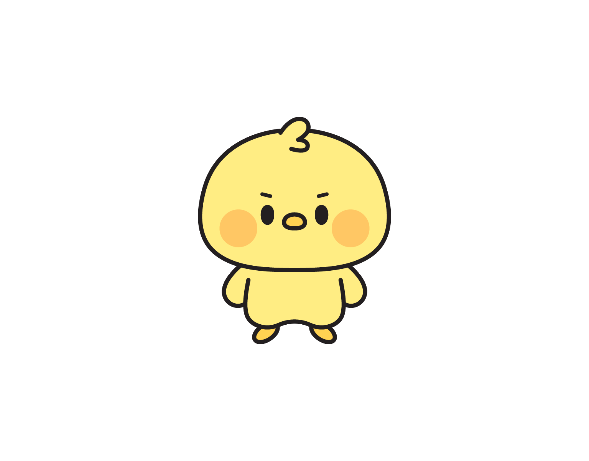

오늘 한 WOD(운동)와 결과를 적고 저장하면 끝. 사진도 같이 붙일 수 있어요. 최고 기록을 세운 날은 🏆 오늘 PR 달성을 체크하면 박스 사람들에게 축하 알림이 가요.
기록을 예쁜 인증카드로 만들어 인스타그램 같은 곳에 올릴 수 있어요. 기록 상세 화면에서 카드 만들기를 눌러보세요. (프로틴 미션 보상도 있어요!)
기록 한 번마다 원판이 한 장씩 쌓이고, 그 위에 내 캐릭터 치키가 올라서요. 치키 머리 위 무게는 기록한 날 하루당 0.5kg씩 늘어나요. 원판을 누르면 그 날 기록을 볼 수 있어요.
| 버튼 | 하는 일 |
|---|---|
| 출석 | 매일 누르면 프로틴을 줘요 (7일 연속이면 총 600!) |
| 옷장 | 모은 옷으로 치키 꾸미기 |
| 뽑기 | 프로틴으로 랜덤 옷 뽑기 |
| PR | 프로필에 올릴 대표 PR(최고 기록) 등록 |
최근 기록 화이트보드, 미션, RM 계산기, kg↔lb 변환, 운동 타이머가 있어요. 아래로 내려보세요.
· SNS 인증카드 만들기 +100
· 오늘 WOD 기록하기 +100
· 5일 연속 기록 티켓 3장
· 7일 연속 출석 티켓 3장
· 친구 초대 — 친구가 가입하고 첫 기록을 남기면 1명당 티켓 5장 (한 달 5명까지)
| 일차 | 1 | 2 | 3 | 4 | 5 | 6 | 7 |
|---|---|---|---|---|---|---|---|
| 프로틴 | 50 | 50 | 100 | 50 | 50 | 100 | 200 |
관리자가 오늘의 WOD를 올리면, 회원들이 각자 기록을 남기고 박스 리더보드가 자동으로 만들어져요. 친구 기록에 🎉 축하를 누르고 💬 댓글도 달 수 있어요. 댓글에서 @닉네임을 쓰면 그 사람에게 알림이 가요.
박스의 오늘 WOD를 기록하면 출석이 자동으로 찍혀요. 따로 누를 필요 없어요.
GEAR 탭에는 크로스핏 브랜드들이 입점해요. 미션으로 모은 WOD TICKET 🎟을 브랜드 할인 쿠폰으로 바꿀 수 있어요. 운동한 만큼 혜택이 열려요.
미션과 출석으로 모은 프로틴 🥤으로 뽑기를 하거나 상점에서 옷을 사서 치키를 꾸며요. 모자·상의·하의·액세서리까지, 한정판 옷도 있어요. 프로틴이 부족하면 충전할 수도 있어요.
홈의 PR 버튼이나 프로필 탭에서 백스쿼트·데드리프트 같은 종목을 골라 내 최고 기록을 올려두세요. 다른 사람이 내 프로필을 보면 🏆 대표 PR이 함께 보여요.
박스 탭 상단 초대 버튼으로 내 초대코드를 보내요. 친구는 가입할 때 코드를 넣으면 프로틴 300, 나는 친구가 첫 기록을 남기면 티켓 5장을 받아요.
네! 혼자서도 기록·미션·치키 꾸미기 전부 쓸 수 있어요. 박스는 원할 때 가입하면 돼요.
홈의 최근 기록(또는 원판)을 눌러 상세 화면에서 수정·삭제할 수 있어요.
프로틴 🥤은 치키 꾸미기(뽑기·상점)에, WOD TICKET 🎟은 GEAR 브랜드 쿠폰 교환에 써요.
프로필 탭 → 문의하기, 또는 bys6547777@naver.com